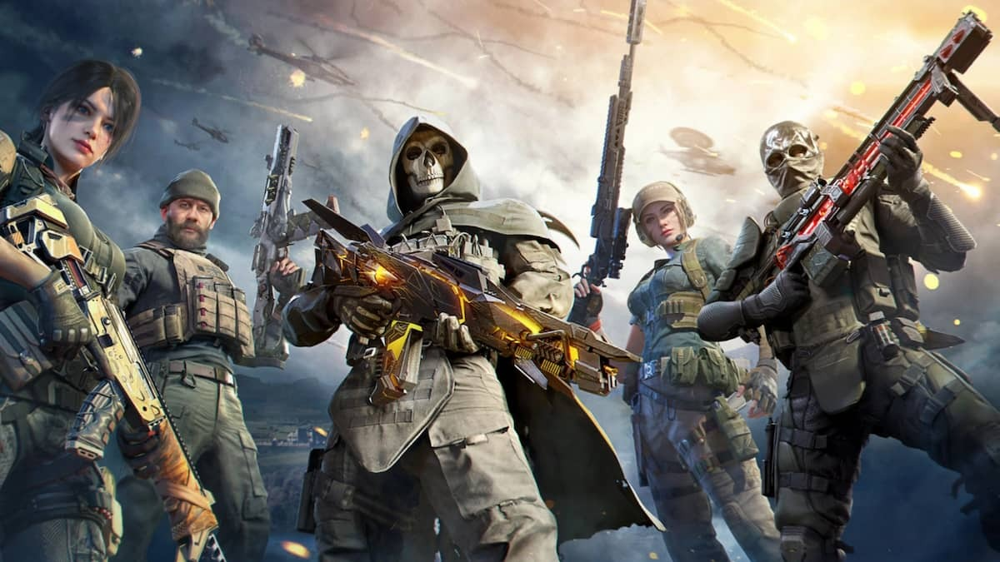
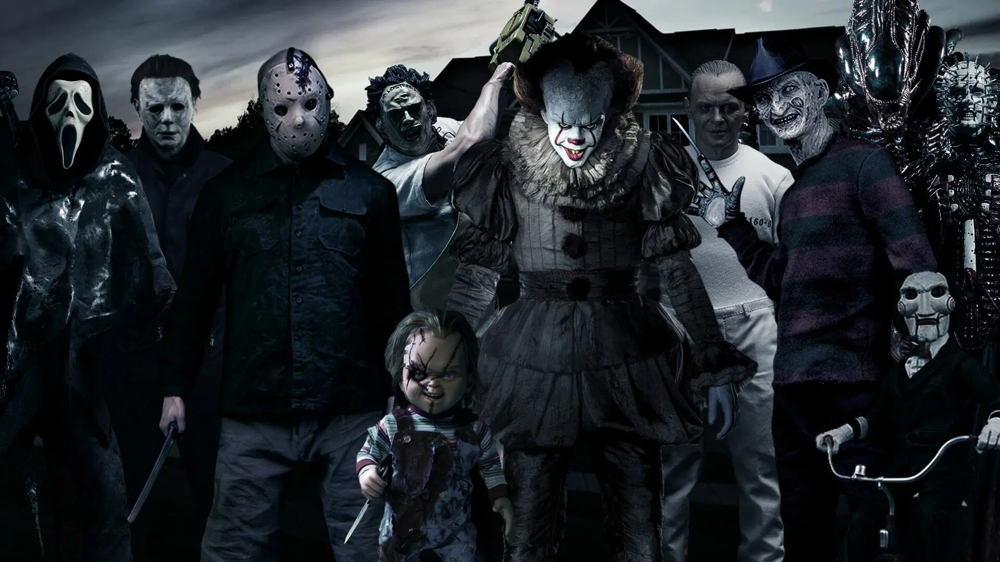

HOBBIES AND SKILLS
PLAYING CALL OF DUTY MOBILE
First and foremost, Dota is a game that constantly challenges me. Every match is unique, requiring me to think on my feet, make quick decisions, and adapt to the ever-changing situations. This aspect of Dota keeps me engaged and excited, as I'm always learning and improving my skills.
The teamwork and coordination in Dota are also major factors that bring me joy. Collaborating with my teammates, strategizing together, and executing well-coordinated plays is incredibly satisfying. The feeling of synergy and accomplishment when we work together to achieve victory is hard to match.
Additionally, Dota has a vibrant and passionate community. Interacting with other players, discussing strategies, and sharing experiences create a sense of camaraderie and connection. I've made many friends through Dota, and the shared love for the game brings us closer together.
Furthermore, Dota serves as a form of escapism for me. It allows me to enter a different world, where I can temporarily forget about my daily worries and immerse myself in the game. It's a way for me to relax, unwind, and have fun, all while engaging in a hobby that I truly enjoy.
PLAYING KARATE DO

I thoroughly enjoy practicing karate-do, as it not only enhances my physical fitness but also instills discipline, focus, and a deep sense of personal growth and accomplishment.
Watching Horror Hovies
I derive immense pleasure from watching horror movies, reveling in the spine-chilling thrills, suspenseful narratives, and the adrenaline rush that accompanies each terrifying moment on the screen.
How I see myself eight years from now?
In eight years, I envision myself thriving as a freelancer, passionately pursuing diverse projects, honing my skills, and enjoying the autonomy that comes with shaping my professional journey.
This is what i want to become.